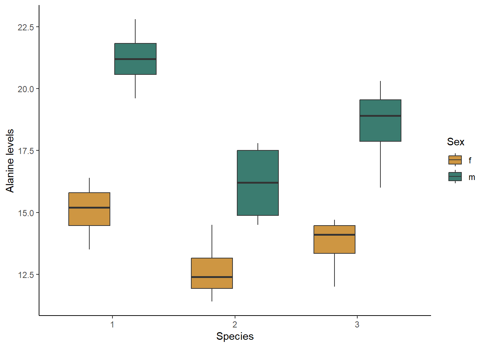
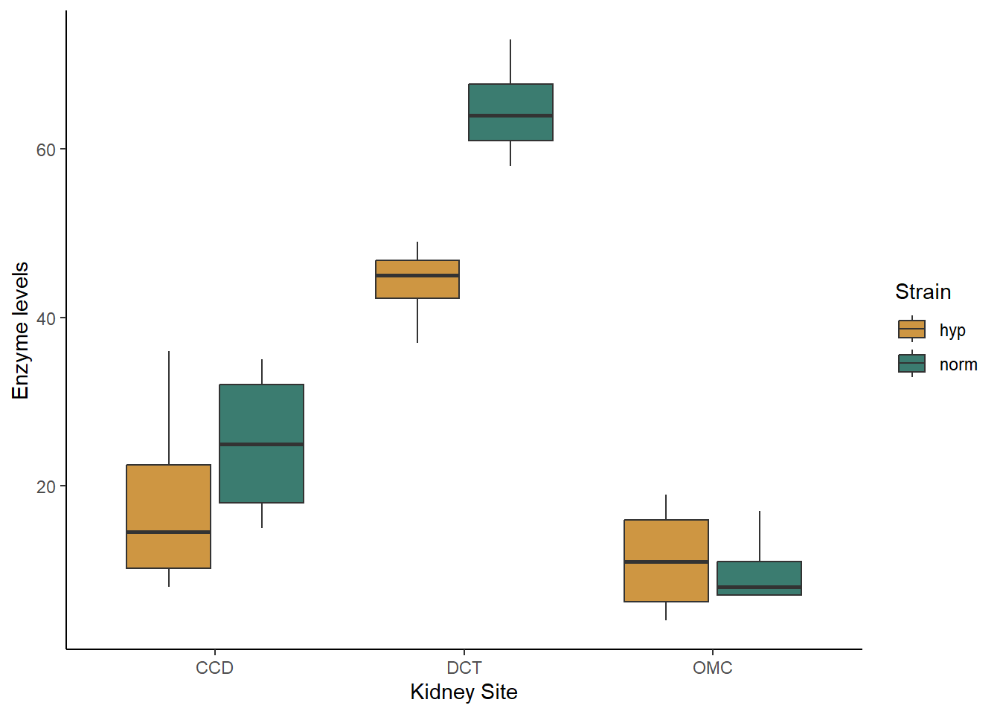

In the previous lessons, we have worked with models that have only one independent and one dependent variable. However, it is common to have more than one independent variable that we would like the test. This is often particularly true when we do observational studies, and there are a whole suite of variable that might affect the response we measure. In this lesson, we will cover models with multiple predictors. We will focus on examples with only two predictors, but the methods can easily be extended to include more than two predictors as well.
For our first example, we will work with two categorical predictor variables. We will use a data set from the arthropod world this time, testing whether levels of an amino acid, alanine, vary between different species and different sexes of millipedes.
We’ll start off by loading and visualizing our data. Be sure your working directory is set to the location of the millipedes data file. We will also need to change the “species” variable to a factor.
mill <- read.csv("millipedes.csv")
mill$species <- as.factor(mill$species)Now, let’s make a box plot to visualize our data set. This will allow us to start looking at the patterns in the data, including possible interactions. We will put species on the x-axis and group and color our boxes by sex.
library(ggplot2)
ggplot(mill, aes(x=species, y=Alanine, fill=sex)) +
geom_boxplot() +
scale_fill_manual(values=c("#ce9642","#3b7c70")) +
labs(x="Species", y="Alanine levels", fill = "Sex") +
theme_classic()
Based just on the graph, what patterns do you see in the data. Does species have an effect? What about sex? Does there appear to be an interaction between the two variables?
Let’s proceed with building our models. Now that we are working with two predictor models, we will have multiple alternative models representing four different hypotheses: (1) only sex matters, (2) only species matters, (3) both sex and species matter but don’t interact, (4) both sex and species matter and they interact. The models are built in this order after the null model below.
mill_null <- lm(Alanine ~ 1, data = mill)
mill_sex <- lm(Alanine ~ sex, data = mill)
mill_species <- lm(Alanine ~ species, data = mill)
mill_both <- lm(Alanine ~ sex + species, data = mill)
mill_int <- lm(Alanine ~ sex*species, data = mill)To view the output of your models, type the name of each model. Just like when we have worked with this model before, the null model will have just an intercept. However, the alternative models will have multiple coefficients. Let’s take a look at a couple of them.
First, view the coefficients of the mill_both model. You
should see four coefficients. After the intercept, the first coefficient
you will see is labeled “sexm”. This is the value you would add to the
intercept to get the alanine levels in male millipedes. Then you will
see two intercepts for species. The first (species2) tells you what to
add to the intercept to get alanine leves for species 2 (for a male of
species 2, you would add both the sexm and species2 coefficients). The
final coefficient is what you would add to the intercept to get the
alanine levels for species 3.
Now, view the coefficients of the mill_int model. Now,
you will see two additional coefficients representing interactions
between the sex and species variables. Based on this model, if you had a
male of species 2, in addition to adding the sexm and species2
coefficients, you would also add the sexm:species2 coefficient, which
account for how sex interacts with being species 2. For a male of
species 3, you would similarly add the coefficient for
sexm:species3.
I personally find it difficult to interpret what the interaction looks like just based on the coefficients. This is where our graphs can come in handy. Looking at our boxplot can help us see the nature of the interaction, if any, between our variables. Based on the graph, do you think the two independent variables interact?
To test the models using a frequentist approach, we start with the
same aov function that we used for a one-way ANOVA. The
only difference is that we will include both of our independent
variables in our formula. We will set up the formula in the same way we
did for our interaction model above, because we want to test both the
main effects and the interaction affect. Run the test and look at the
output using the code below. Based on the output, we might have to run
additional follow-up tests.
mill_2way <- aov(Alanine ~ sex*species,data=mill)
summary(mill_2way)## Df Sum Sq Mean Sq F value Pr(>F)
## sex 1 138.72 138.72 65.679 2.04e-07 ***
## species 2 55.26 27.63 13.082 0.00031 ***
## sex:species 2 6.89 3.45 1.631 0.22331
## Residuals 18 38.02 2.11
## ---
## Signif. codes: 0 '***' 0.001 '**' 0.01 '*' 0.05 '.' 0.1 ' ' 1In the output, you should see a table with a row for each of the main effects (sex and species) and a row showing the results for the interaction between the variables (sex:species). Let’s start by looking at the interaction effect, because that affect how we interpret the main effects. We can see from the table that the p-value for the interaction is greater than 0.05, so the interaction affect is not significant. This makes things easier for us because we can interpret the main effects based on the graph and the model coefficients, without worrying about how they interact!
However, just like with a one-way ANOVA, when we have a categorical
variable with more than two groups, such a species in this example, the
ANOVA only tells us that at least one group is different. It doesn’t
tell us which specific groups are different. We therefore need to do a
post hoc test to look at those pairwise differences. We can use the same
TukeyHSD function that we used for post hoc tests after a
one-way ANOVA. However, because we have more than one independent
variable, we can choose to include both variables in the Tukey HSD test
or only one variable. In this case, our sex variable has only two
groups, so it is not necessary to include it in the post hoc test. We
only need to include species, as shown in the code below.
TukeyHSD(mill_2way,which=c("species"))## Tukey multiple comparisons of means
## 95% family-wise confidence level
##
## Fit: aov(formula = Alanine ~ sex * species, data = mill)
##
## $species
## diff lwr upr p adj
## 2-1 -3.7125 -5.5670304 -1.8579696 0.0002068
## 3-1 -2.0125 -3.8670304 -0.1579696 0.0322560
## 3-2 1.7000 -0.1545304 3.5545304 0.0756331You interpret this output in the same way you did following the one-way ANOVA. Which pairs of species show significant differences from each other?
As we have for previous tests, we will use the AIC
function to compare our models, but this time we have five different
models to compare, instead of just two. We can compare all five at the
same time.
AIC(mill_null,mill_sex,mill_species,mill_both,mill_int)## df AIC
## mill_null 2 127.25979
## mill_sex 3 108.40041
## mill_species 4 124.94574
## mill_both 5 93.14672
## mill_int 7 93.14888Based on the output table, which model was the best? Was it significantly better than the next best model? What do the differences in AIC values tell you about the effects of each predictor and their interaction?
For our second example, we will again work with two categorical predictor variables. We will use a data set from a medical test related to hyptertension. One common cause of hypertension is high sodium levels, which are controlled in part by an enzyme in the kidney called Na-K-ATPase. Researchers tested the activity of Na-K-ATPase in two strains of lab rats: a control strain and a strain selected to spontaneously develop hypertension. They wanted to know if Na-K-ATPase activity varied between these two strains and, if so, what sites in the kidney varied in their enzyme activity. The two independent variables are the rat strain (normal or hypertensive) and the kidney site (DCT, CCD, or OMCD).
We’ll start off by loading and visualizing our data. Be sure your working directory is set to the location of the kidney data file.
kidney <- read.csv("kidney.csv")Now, let’s make a box plot to visualize our data set. We will put site on the x-axis and group and color our boxes by lab rat strain.
library(ggplot2)
ggplot(kidney, aes(x=site, y=enzyme, fill=hyper)) +
geom_boxplot() +
scale_fill_manual(values=c("#ce9642","#3b7c70")) +
labs(x="Kidney Site", y="Enzyme levels", fill = "Strain") +
theme_classic()
Based just on the graph, what patterns do you see in the data. Do the strains differ in their enzyme activity? What the kidney sites? Does there appear to be an interaction between the two variables?
Let’s proceed with building our models. Again, we will have multiple alternative models representing four different hypotheses: (1) only strain matters, (2) only site matters, (3) both strain and site matter but don’t interact, (4) both strain and site matter and they interact. The models are built in this order after the null model below.
kidney_null <- lm(enzyme ~ 1, data = kidney)
kidney_hyper <- lm(enzyme ~ hyper, data = kidney)
kidney_site <- lm(enzyme ~ site, data = kidney)
kidney_both <- lm(enzyme ~ hyper + site, data = kidney)
kidney_int <- lm(enzyme ~ hyper*site, data = kidney)View the output of your models by typing the name of each model. Based on the model outputs and the graph, without running the tests, how would you describe the patterns in your results.
As in the previous example, we will start by using the
aov function to run the overall two-way ANOVA.
kidney_2way <- aov(enzyme ~ hyper*site, data=kidney)
summary(kidney_2way)## Df Sum Sq Mean Sq F value Pr(>F)
## hyper 1 459 459 7.139 0.0156 *
## site 2 8287 4144 64.393 6.27e-09 ***
## hyper:site 2 496 248 3.854 0.0404 *
## Residuals 18 1158 64
## ---
## Signif. codes: 0 '***' 0.001 '**' 0.01 '*' 0.05 '.' 0.1 ' ' 1In the output, you should see a similar table as you saw in the millipede example. Let’s start by looking at the interaction effect again. We can see from the table that the p-value for the interaction is less than 0.05, so the interaction affect is significant this time. This makes things trickier because now we can’t evaluate each main effect independently. Because the two variables interact, the each main effect depends on the value of the other independent variable.
One way to deal with this non-independence is to split up our data into groups and run multiple one-way ANOVAs (or t-tests, depending on how many categories we have. For example, in this case, we are primarily interested in the difference between normal and hypertensive rats. Therefore, we can split our data into three groups, one for each kidney site, and then run three tests to compare normal and hypertensive rats at each site.
(Note: We do not want to split our data like this every time we run a two-way ANOVA. We only use this approach when there is a significant interaction.)
A downside of this approach is that we are now running multiple tests on the same data set. We can’t use a Tukey HSD test in this particular scenario, but what is another strategy we discussed in the last class that could work here?
Now we will run t-tests to compare the normal and hypertensive rats
at each individual kidney site. We will take advantage of two new
functions: the subset function and the with
function. The subset function will allow us to take a
subset of the data containing only the kidney site we want. The
with function will tell R to apply the t.test to the subset
of the data that we took. We include the code for the t-test as the
second argument of the with function.
with(subset(kidney,site=="CCD"),t.test(enzyme~hyper))##
## Welch Two Sample t-test
##
## data: enzyme by hyper
## t = -0.85682, df = 5.5936, p-value = 0.4267
## alternative hypothesis: true difference in means between group hyp and group norm is not equal to 0
## 95 percent confidence interval:
## -26.37137 12.87137
## sample estimates:
## mean in group hyp mean in group norm
## 18.25 25.00Now try adapting this code to run the t-test for the other two sites (DCT and OMCD). Based on the output of the three tests, which kidney sites show differences in enzyme activity between the two strains of mice? Don’t forget to adjust your threshold p-value based on the number of tests you ran.
Now we will use the likelihood approach and AIC function
to compare our models, just like we did with the millipede models.
AIC(kidney_null,kidney_hyper,kidney_site,kidney_both,kidney_int)## df AIC
## kidney_null 2 217.8267
## kidney_hyper 3 218.7425
## kidney_site 4 183.5836
## kidney_both 5 179.7022
## kidney_int 7 175.1477Based on the output table, which model was the best? Was it significantly better than the next best model? What do the differences in AIC values tell you about the effects of each predictor and their interaction?